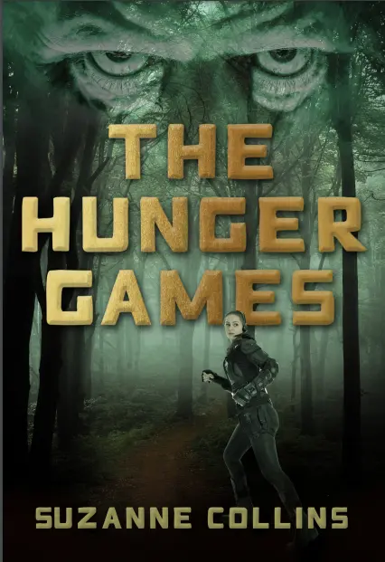
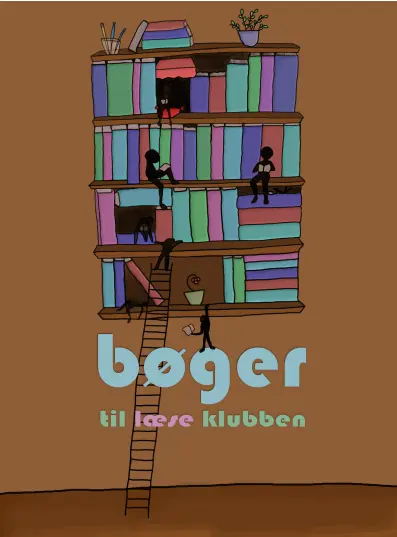

Da jeg var i praktik hos et grafisk design/bogomslagfirma, prøvede jeg at designe bogomslag med
Photoshop.
Jeg lærte også at indsamle indhold via iStock. Jeg fik en god oplevelse ud af det - jeg syntes at de
opgaver
jeg fik var vildt spændende, og kunne godt se mig selv arbejde med det i fremtiden.
Jeg kom på idéer til løsninger til forskellige bogomslag.
Min oprindelige og eneste opgave var
at redesigne et bogomslag til min yndlingsbog, som jeg ville kunne få printet i slutningen af ugen. Jeg
medbragte The Hunger Games.
OPGAVE 1
Jeg kom på et par forskellige udkast. Dette var mit første udkast. Jeg færdiggjorde det på under en dag.
Men eftersom at jeg havde mere tid, udarbejdede jeg endnu et, som jeg selv syntes var bedre, og det blev
mit endelige resultat, som vi printede.
Jeg designede også et logo i Illustrator.
Jeg havde stadig meget tid tilovers. Derfor blev jeg sat til at designe en plakat til bogen. Jeg skulle derfor også fotografere bogen. Jeg lavede 2 plakater, som minder om hinanden.
OPGAVE 2
Da jeg var færdig med det, var der stadig tid tilbage, og den brugte jeg på at designe en plakat til læseklubben. Jeg tegnede illustrationen i Photoshop. Det tog et par timer.
OPGAVE 3
Min sidste opgave blev at komme med idéer til bogomslag til en reel bog, som medarbejderne var ved at arbejde på. Jeg kom med 2 udkast.